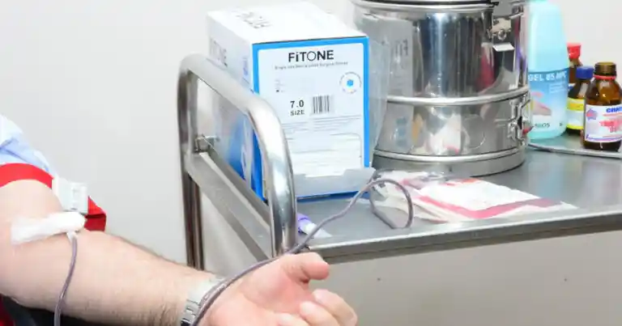

Vebinarlar
Canlı Yayım
Med News
Daxil ol
Xəbərlər
Layihələr
Kitablar
Arxivlər
Məqalələr
Vebinarlar
Canlı yayım
Forum
Sürətli keçidlər:
"Üç həftəyə Azərbaycanda qırğın günlər başlayacaq" -
PROQNOZ
Yoluxma bu səbəbə görə artıb - Mütəxəssisdən
AÇIQLAMA
“Sputnik V” vurduranlar bu ölkəyə
buraxılmayacaqlar
Son sutkada COVID-19-dan 1 nəfər vəfat edib
Ətraflı

TƏBİB-dən qanvermə aksiyaları ilə bağlı AÇIQLAMA
50 kq çəkidən aşağı olanlar qan verə bilər? - Nazirlikdən AÇIQLAMA
Son Xəbərlər
Son sutkada COVID-19-dan 1 nəfər vəfat edib 17:00 08.08.2022
TƏBİB-dən qanvermə aksiyaları ilə bağlı AÇIQLAMA 12:28 08.08.2022
Bakı-Ələt yolunda qəza: 5 nəfər KTM-ə yerləşdirildi 11:56 08.08.2022
50 kq çəkidən aşağı olanlar qan verə bilər? - Nazirlikdən AÇIQLAMA 10:27 08.08.2022
ABŞ prezidenti koronavirusdan sağaldı 09:58 08.08.2022
İsveçdə doğum son 20 ilin ən aşağı həddinə düşüb 09:56 08.08.2022
EKSPERT: "Donor olmaq üçün lazım olan rəsmi sənəd şəxsiyyət vəsiqəsidir" 00:00 08.08.2022
Dünyada yoluxma: 589 587 346 00:00 08.08.2022
Beynəlxalq Oftalmoloqlar Günü - 8 avqust 00:00 08.08.2022
ABŞ-da 43 ildən sonra ilk dəfə poliomielitə yoluxma təsdiqləndi 10:41 22.07.2022
Bizə zəng edin :
+994 55 455 68 68